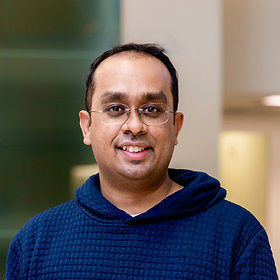

Symposium talk
Friday, May 15, 1:45 – 3:45 pm · Talk Room 1
Using cognitive tests to reveal the strengths and limits of brain encoding models
Speaker N Apurva Ratan Murty
Session Beyond Prediction: Interpretable Brain Encoding Models for Understanding Vision
